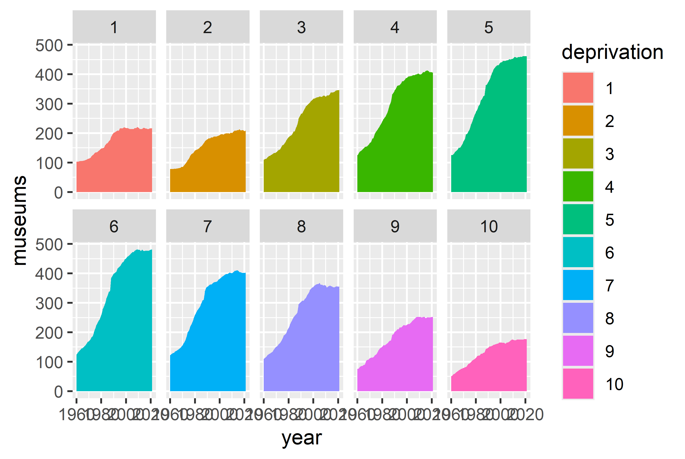
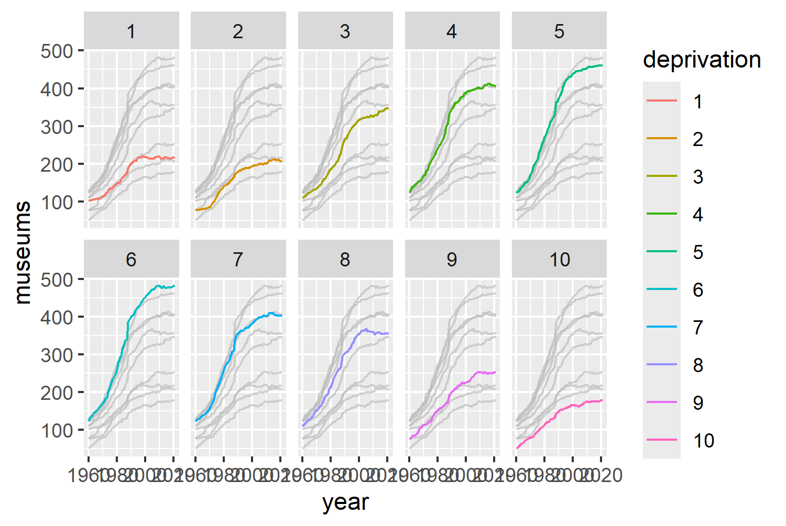
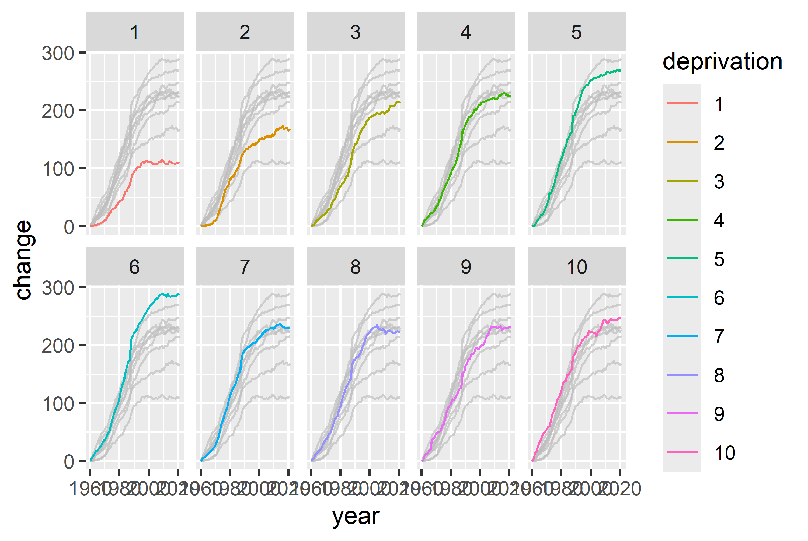
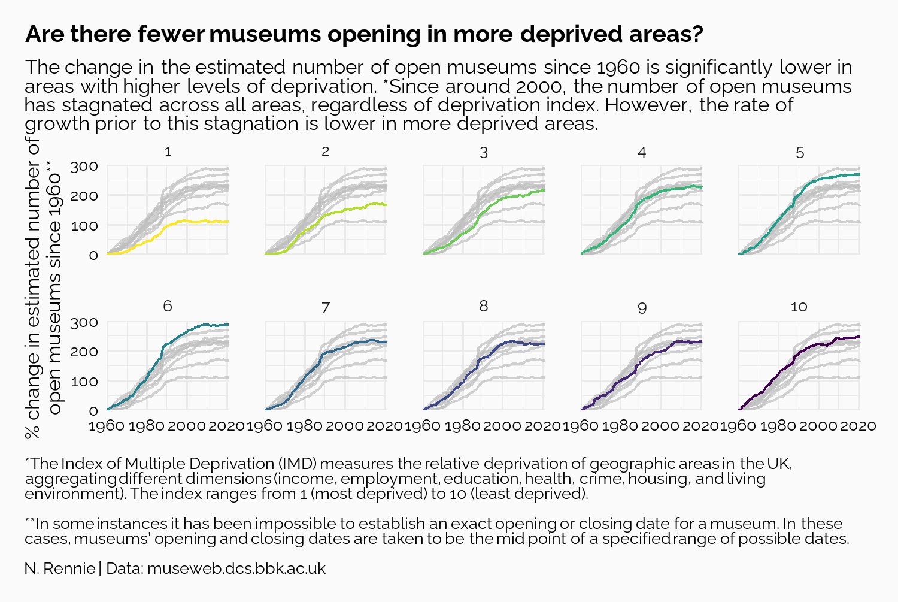
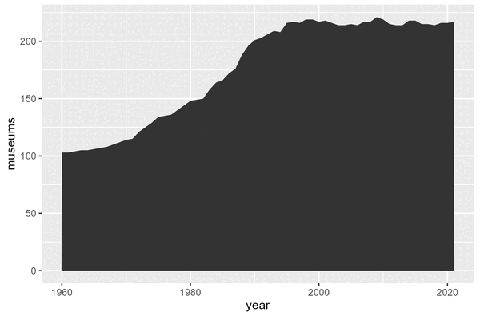

museums <- readr::read_csv("data/museums.csv")2 UK Museums: highlighting line charts with {gghighlight}
In this chapter we’ll consider different ways of visualising data that varies over time, aiming to avoid spaghetti charts, with the help of the {gghighlight} extension package .
2.1 Data
#TidyTuesday (R4DS Online Learning Community 2023)
2.2 Exploratory work
Let’s start exploring the data!
2.2.1 Data exploration
2.2.2 Exploratory sketches

2.3 Preparing a plot
2.3.1 Data wrangling
This is one of those very real datasets - the data wrangling is …
You could alternatively use separate_wider_delim()
museum_data <- museums |>
dplyr::select(
Year_opened, Year_closed, Area_Deprivation_index
) |>
tidyr::drop_na() |>
tidyr::separate(
Year_opened,
into = c("opened1", "opened2"),
sep = ":"
) |>
tidyr::separate(
Year_closed,
into = c("closed1", "closed2"),
sep = ":"
) |>
dplyr::mutate(
dplyr::across(
c(opened1, opened2, closed1, closed2), as.numeric
),
Area_Deprivation_index = factor(Area_Deprivation_index, levels = 1:10)
) |>
dplyr::mutate(dplyr::across(
c(closed1, closed2),
~ dplyr::if_else(.x == 9999, NA_real_, .x)
)) |>
dplyr::mutate(closed = dplyr::case_when(
closed1 == closed2 ~ closed1,
closed1 != closed2 ~ round((closed2 + closed1) / 2)
)) |>
dplyr::mutate(opened = dplyr::case_when(
opened1 == opened2 ~ opened1,
opened1 != opened2 ~ round((opened2 + opened1) / 2)
)) |>
dplyr::select(Area_Deprivation_index, opened, closed) |>
dplyr::rename(deprivation = Area_Deprivation_index) |>
dplyr::arrange(deprivation)all_years <- 1960:2021
deps <- 1:10
output <- purrr::pmap_vec(
expand.grid(all_years, deps),
~ num_year(year = .x, dep = .y)
)
results <- matrix(output,
nrow = length(all_years),
byrow = FALSE
)
colnames(results) <- 1:10plot_data <- results |>
tibble::as_tibble() |>
dplyr::mutate(year = all_years) |>
tidyr::pivot_longer(
-year,
names_to = "deprivation",
values_to = "museums"
) |>
dplyr::mutate(
deprivation = factor(deprivation, levels = 1:10)
)2.3.2 Packages and functions
{gghighlight}
2.3.3 The first plot
one of most common approaches - although already thinking about facets.worth seeing what it looks like - maybe want to highlight just one e.g. most deprived
library(ggplot2)
ggplot(
data = plot_data,
mapping = aes(x = year, y = museums, color = deprivation)
) +
geom_line()
speghetti plots 10 is a fairly large number of colors
Since the colors in the legend are in different order
let’s try separating out into different facets - see Chapter 1 (cross-ref needed) color to fill geom_area
ggplot(
data = plot_data,
mapping = aes(x = year, y = museums, fill = deprivation)
) +
geom_area() +
facet_wrap(~deprivation, nrow = 2)

this was the initial design i started with, but hard to compare let’s go back to geom_line
ggplot(
data = plot_data,
mapping = aes(x = year, y = museums, color = deprivation)
) +
geom_line() +
facet_wrap(~deprivation, nrow = 2) +
gghighlight::gghighlight(use_direct_label = FALSE)

some of them started higher lower levels, let’s look at perc change instead
lookup <- plot_data |>
dplyr::filter(year == 1960) |>
dplyr::select(deprivation, museums)
new_plot_data <- plot_data |>
dplyr::left_join(lookup, by = "deprivation") |>
dplyr::rename(
museums = museums.x,
museums_1960 = museums.y
) |>
dplyr::mutate(
change = (100 * (museums - museums_1960) / museums_1960)
) |>
dplyr::select(year, deprivation, change)let’s plot instead
base_plot <- ggplot(
data = new_plot_data,
mapping = aes(x = year, y = change, color = deprivation)
) +
geom_line() +
facet_wrap(~deprivation, nrow = 2) +
gghighlight::gghighlight(use_direct_label = FALSE)
base_plot

2.4 Advanced styling
get rid of legend colors aren’t great
2.4.1 Colors
{viridis} (Garnier et al. 2024)
bg_col <- "#fafafa"
text_col <- "black"col_plot <- base_plot +
viridis::scale_color_viridis(discrete = TRUE, direction = -1)
col_plot
2.4.2 Text and fonts
sysfonts::font_add_google("Raleway", "raleway")
showtext::showtext_auto()
showtext::showtext_opts(dpi = 300)
body_font <- "raleway"{sysfonts} {showtext}
Text
make sure text is correct one
title <- "Are there fewer museums opening in more deprived areas?"
st <- "The change in the estimated number of open museums since 1960 is significantly lower in areas with higher levels of deprivation. *Since around 2000, the number of open museums has stagnated across all areas, regardless of deprivation index. However, the rate of growth prior to this stagnation is lower in more deprived areas."
cap <- "*The Index of Multiple Deprivation (IMD) measures the relative deprivation of geographic areas in the UK, aggregating different dimensions (income, employment, education, health, crime, housing, and living environment). The index ranges from 1 (most deprived) to 10 (least deprived).<br><br>**In some instances it has been impossible to establish an exact opening or closing date for a museum. In these cases, museums’ opening and closing dates are taken to be the mid point of a specified range of possible dates.<br><br>N. Rennie | Data: museweb.dcs.bbk.ac.uk"text_plot <- col_plot +
labs(
title = title, subtitle = st, caption = cap,
x = "",
y = "% change in estimated number of\nopen museums since 1960**"
)2.4.3 Adjusting themes
library(ggtext)
text_plot +
scale_y_continuous(limits = c(0, 300)) +
coord_cartesian(expand = FALSE) +
theme_minimal(base_size = 8, base_family = body_font) +
theme(
legend.position = "none",
plot.title.position = "plot",
plot.caption.position = "plot",
panel.spacing = unit(1, "lines"),
plot.margin = margin(10, 15, 10, 10),
plot.background = element_rect(
fill = bg_col, color = bg_col
),
panel.background = element_rect(
fill = bg_col, color = bg_col
),
plot.title = element_textbox_simple(
color = text_col,
lineheight = 0.5,
size = rel(1.2),
face = "bold",
margin = margin(b = 5)
),
plot.subtitle = element_textbox_simple(
color = text_col,
lineheight = 0.5
),
plot.caption = element_textbox_simple(
hjust = 0,
color = text_col,
lineheight = 0.5
),
axis.text = element_text(
color = text_col,
lineheight = 0.5
)
)

2.5 Reflection
What would I want to change about this plot? color probably not needed
Each plot created during the process of developing the original version of this visualisation was captured using {camcorder}, and is shown in the gif below. If you’d like to learn more about how {camcorder} can be used in the data visualisation process, Chapter 5.
